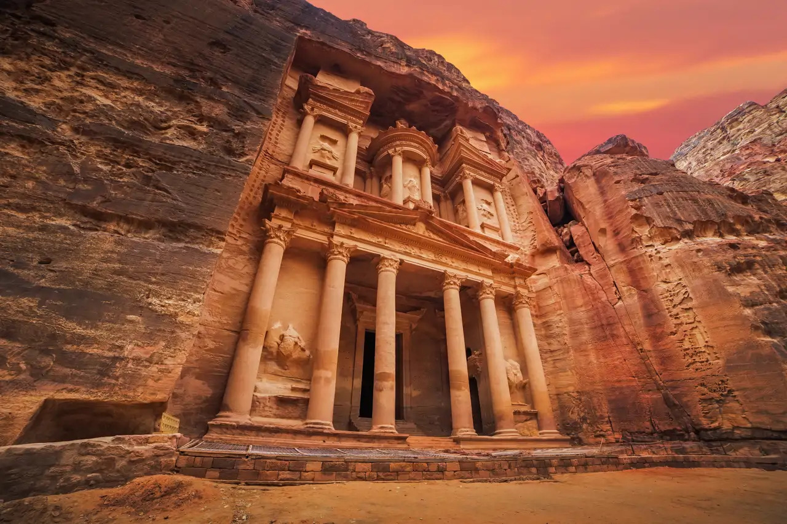
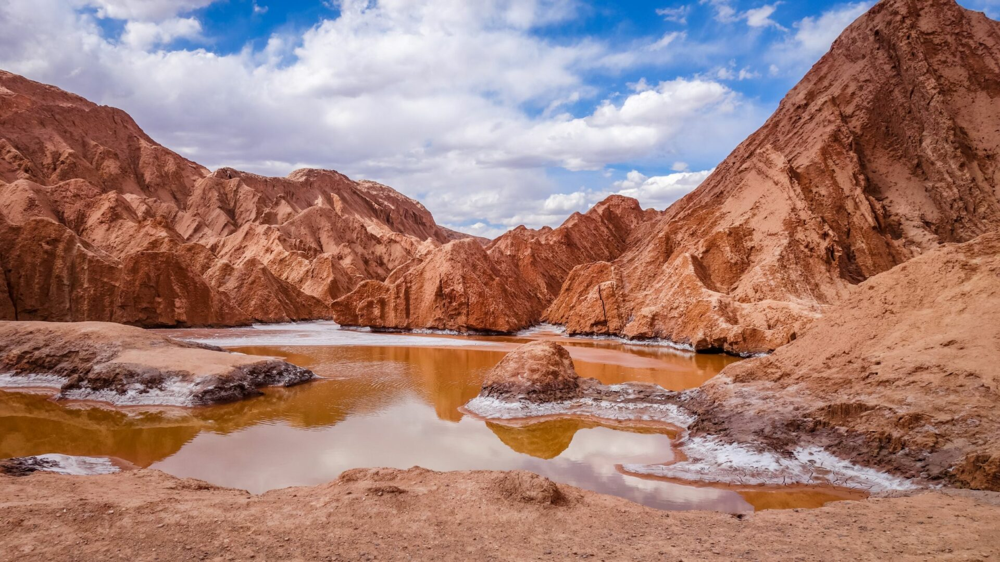

La Ciudad del Acero y las Estrellas

Ubicada en una cordillera extrema de alta montaña, Antarion es un asentamiento minero e industrial único que fusiona la profundidad del subsuelo con la observación astronómica del cosmos. La ciudad nació a partir de un imponente complejo de extracción mineral y evolucionó hasta convertirse en un dinámico centro urbano rodeado de picos nevados, cañones subterráneos y estructuras de hierro.
En la ciudad conviven activamente tres grandes comunidades que moldean su historia e identidad cotidiana: las familias mineras tradicionales (Los Subterráneos), la comunidad científica de astrónomos y geólogos (Los Siderales) y un creciente movimiento de artesanos del metal (Los Alquimistas).
Características Principales

Antarion destaca por ser un asentamiento donde la infraestructura pesada convivió desde sus orígenes con el entorno natural de la cordillera
- Geografía de alta montaña: Rodeada de picos nevados, cañones subterráneos y una fosa minera a cielo abierto iluminada con tonos carmesí.
- Clima andino extremo: Veranos frescos e inviernos crudos con nevadas frecuentes que cubren las estructuras de hierro.
- Cielos astronómicos: Ubicada lejos de la contaminación lumínica urbana, ofrece una visibilidad óptima para la observación de estrellas y telescopios de alta potencia.
- Fenómeno del "Viento Rojo": Un evento climático local que desciende de las cumbres y tiñe los atardeceres con un polvo mineral carmesí.
Lugares Emblemáticos
Descubre algunos de los atractivos más impactantes de nuestra geografía:
- El Crisol Extremo: Mirador sobre la gigantesca fosa minera iluminada con tonos carmesí.
- Los Cañones de Cristal: Túneles subterráneos que permiten apreciar vetas minerales brillantes.
- La Fundición Vieja: Antiguo complejo industrial reconvertido en polo gastronómico y cultural.
Eventos Anuales
Actividades destacadas a lo largo del año:
- Festival Lumínica Antares (Otoño): Tres noches de apagón general para observación astronómica y luces mapping.
- El Desafío del Subsuelo (Invierno): Carrera extrema entre la superficie montañosa y galerías subterráneas.
- La Expo-Metal (Primavera): Convención de tecnología pesada y festival de esculturas en vivo.